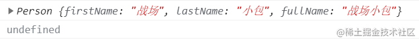
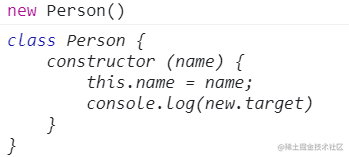
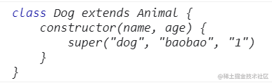

如何确保你的构造函数只能被new调用，而不能被普通调用？
参考答案
明确函数的双重用途
JavaScript 中的函数一般有两种使用方式:
- 当作构造函数使用:
new Func() - 当作普通函数使用:
Func()
但 JavaScript 内部并没有区分两者的方式，我们人为规定构造函数名首字母要大写作为区分。也就是说，构造函数被当成普通函数调用不会有报错提示。
下面来举个栗子:
// 定义构造函数 Person
function Person(firstName, lastName) {
this.firstName = firstName;
this.lastName = lastName;
this.fullName = this.firstName + this.lastName;
}
// 使用 new 调用
console.log(new Person("战场", "小包"));
// 当作普通函数调用
console.log(Person("战场", "小包"))输出结果:

通过输出结果可以发现，定义的构造函数被当作普通函数来调用，没有任何错误提示。
使用 instanceof 实现
instanceof 基础知识
instanceof 运算符用于检测构造函数的 prototype 属性是否出现在某个实例对象的原型链上。
使用语法:
object instanceof constructor我们可以使用 instanceof 检测某个对象是不是另一个对象的实例，例如 ``new Person() instanceof Person --> true``
new 绑定/ 默认绑定
- 通过
new来调用构造函数，会生成一个新对象，并且把这个新对象绑定为调用函数的this。 - 如果普通调用函数，非严格模式
this指向window，严格模式指向undefined
function Test() {
console.log(this)
}
// Window {...}
console.log(Test())
// Test {}
console.log(new Test())使用 new 调用函数和普通调用函数最大的区别在于函数内部 this 指向不同: new 调用后 this 指向实例，普通调用则会指向 window。
instanceof 可以检测某个对象是不是另一个对象的实例。如果为 new 调用， this 指向实例，this instanceof 构造函数 返回值为 true ，普通调用返回值为 false。
代码实现
function Person(firstName, lastName) {
// this instanceof Person
// 如果返回值为 false，说明为普通调用
// 返回类型错误信息——当前构造函数需要使用 new 调用
if (!(this instanceof Person)) {
throw new TypeError('Function constructor A cannot be invoked without "new"')
}
this.firstName = firstName;
this.lastName = lastName;
this.fullName = this.firstName + this.lastName;
}
// 当作普通函数调用
// Uncaught TypeError: Function constructor A cannot be invoked without "new"
console.log(Person("战场", "小包"));通过输出结果，我们可以发现，定义的 Person 构造函数已经无法被普通调用了。撒花~~~
但这种方案并不是完美的，存在一点小小的瑕疵。我们可以通过伪造实例的方法骗过构造函数里的判断。
具体实现: JavaScript 提供的 apply/call 方法可以修改 this 指向，如果调用时将 this 指向修改为 Person 实例，就可以成功骗过上面的语法。
// 输出结果 undefined
console.log(Person.call(new Person(), "战场", "小包"));这点瑕疵虽说无伤大雅，但经过小包的学习，ES6 中提供了更好的方案。
new.target
JavaScript 官方也发现了这个让人棘手的问题，因此 ES6 中提供了 new.target 属性。
《ECMAScript 6 入门》中讲到: <br>ES6 为 new 命令引入了一个 new.target 属性，该属性一般用在构造函数之中，返回 new 命令作用于的那个构造函数。如果构造函数不是通过 new 命令或 Reflect.construct() 调用的，new.target 会返回 undefined ，因此这个属性可以用来确定构造函数是怎么调用的。
new.target 就是为确定构造函数的调用方式而生的，太符合这个场景了，我们来试一下 new.target 的用法。
function Person() {
console.log(new.target);
}
// new: Person {}
console.log("new: ",new Person())
// not new: undefined
console.log("not new:", Person())所以我们就可以使用 new.target 来非常简单的实现对构造函数的限制。
function Person() {
if (!(new.target)) {
throw new TypeError('Function constructor A cannot be invoked without "new"')
}
}
// Uncaught TypeError: Function constructor A cannot be invoked without "new"
console.log("not new:", Person())使用ES6 Class
类也具备限制构造函数只能用 new 调用的作用。
ES6 提供 Class 作为构造函数的语法糖，来实现语义化更好的面向对象编程，并且对 Class 进行了规定：类的构造器必须使用 new 来调用。
因此后续在进行面向对象编程时，强烈推荐使用 ES6 的 Class。 Class 修复了很多 ES5 面向对象编程的缺陷，例如类中的所有方法都是不可枚举的；类的所有方法都无法被当作构造函数使用等。
class Person {
constructor (name) {
this.name = name;
}
}
// Uncaught TypeError: Class constructor Person cannot be invoked without 'new'
console.log(Person())学到这里我就不由得好奇了，既然 Class 必须使用 new 来调用，那提供 new.target 属性的意义在哪里？
new.target 实现抽象类
首先来看一下 new.target 在类中使用会返回什么？
class Person {
constructor (name) {
this.name = name;
console.log(new.target)
}
}
new Person()输出结果:

Class 内部调用 new.target，会返回当前 Class。
《ECMAScript 6 入门》中又讲到: 需要注意的是，子类继承父类时，new.target会返回子类。继承中的 new.target 好像有不一样的花样，我们来试一下。
class Animal {
constructor (type, name, age) {
this.type = type;
this.name = name;
this.age = age;
console.log(new.target)
}
}
// extends 是 Class 中实现继承的关键字
class Dog extends Animal {
constructor(name, age) {
super("dog", "baobao", "1")
}
}
const dog = new Dog()输出结果:

通过上面案例，我们可以发现子类调用和父类调用的返回结果是不同的，我们利用这个特性，就可以实现父类不可调用而子类可以调用的情况——面向对象中的抽象类
抽象类实现
什么是抽象类那？我们以动物世界为例。
我们定义了一个动物类 Animal，并且通过这个类来创建动物，动物是个抽象概念，当你提到动物类时，你并不知道我会创建什么动物。只有将动物实体化，比如说猫，狗，猪啊，这才是具体的动物，并且每个动物的行为都会有所不同。因此我们不应该通过创建 Animal 实例来生成动物，Animal 只是动物抽象概念的集合。
Animal 就是一个抽象类，我们不应该通过它来生成动物，而是通过它的子类，例如 Dog、Cat 等来生成对应的 dog/cat 实例。
new.target 子类调用和父类调用的返回值是不同的，所以我们可以借助 new.target 实现抽象类
抽象类也可以理解为不能独立使用、必须继承后才能使用的类。
class Animal {
constructor (type, name, age) {
if (new.target === Animal) {
throw new TypeError("abstract class cannot new")
}
this.type = type;
this.name = name;
this.age = age;
}
}
// extends 是 Class 中实现继承的关键字
class Dog extends Animal {
constructor(name, age) {
super("dog", "baobao", "1")
}
}
// Uncaught TypeError: abstract class cannot new
const dog = new Animal("dog", "baobao", 18)总结
本文介绍了三种限制构造函数只能被 new 调用的方案
- 借助
instanceof和new绑定的原理，适用于低版本浏览器 - 借助
new.target属性，可与class配合定义抽象类 - 面向对象编程使用
ES6 class——最佳方案